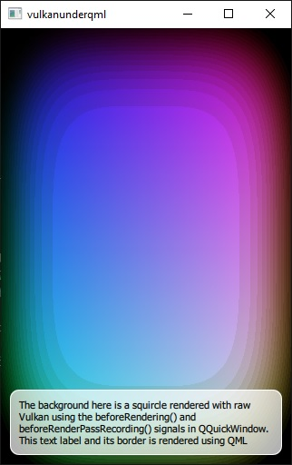

Scene Graph - Vulkan Under QML
Shows how to render directly with Vulkan under a Qt Quick scene.

Note: Compiling this example requires an SDK. See Vulkan Integration for information on what to install.
Overview
This example makes use of the QQuickWindow::beforeRendering() and QQuickWindow::beforeRenderPassRecording() signals to draw custom Vulkan content under a Qt Quick scene. QML is used to render a text label on top.
The example is equivalent in most ways to the OpenGL Under QML, Direct3D 11 Under QML, and Metal Under QML examples, they all render the same custom content, just via different native APIs.
The particulars of utilizing QML will be covered in this documentation without delving into the detail of custom Vulkan rendering.
Affecting Vulkan rendering from QML
The example shows how to use values that are exposed to QML to control Vulkan rendering.
To expose the threshold value t to QML, in the definition of VulkanSquircle, we use the Q_OBJECT, Q_PROPERTY, and QML_ELEMENT macros like so:
class VulkanSquircle : public QQuickItem { Q_OBJECT Q_PROPERTY(qreal t READ t WRITE setT NOTIFY tChanged) QML_ELEMENT
We then go on to declare public and private items:
public: VulkanSquircle(); qreal t() const { return m_t; } void setT(qreal t); signals: void tChanged(); public slots: void sync(); void cleanup(); private slots: void handleWindowChanged(QQuickWindow *win); private: void releaseResources() override; qreal m_t = 0; SquircleRenderer *m_renderer = nullptr;
Then in main.qml we animate the threshold value using a NumberAnimation.
VulkanSquircle {
SequentialAnimation on t {
NumberAnimation { to: 1; duration: 2500; easing.type: Easing.InQuad }
NumberAnimation { to: 0; duration: 2500; easing.type: Easing.OutQuad }
loops: Animation.Infinite
The t variable is ultimately used by the SPIR-V shader program that draws the squircles.
Using signals to render custom Vulkan content
The QQuickWindow::beforeRendering() and QQuickWindow::beforeRenderPassRecording() signals are what are used.
The QQuickWindow::beforeRendering() signal is emitted at the start of every frame, before the scene graph starts its rendering. This means any Vulkan draw calls that are made as a response to this signal, will stack under the Qt Quick items. There are two signals because the custom Vulkan commands are recorded onto the same command buffer used by the scene graph.
The beforeRendering() function on its own is not sufficient for this, because it gets emitted at the start of the frame, before recording the start of a renderpass instance by using vkCmdBeginRenderPass.
The solution: by connecting to beforeRenderPassRecording(), the application's own commands and the scene graph's scaffolding will end up in the right order.
Connecting the signals is done by the sync() function:
void VulkanSquircle::sync() { if (!m_renderer) { m_renderer = new SquircleRenderer; // Initializing resources is done before starting to record the // renderpass, regardless of wanting an underlay or overlay. connect(window(), &QQuickWindow::beforeRendering, m_renderer, &SquircleRenderer::frameStart, Qt::DirectConnection); // Here we want an underlay and therefore connect to // beforeRenderPassRecording. Changing to afterRenderPassRecording // would render the squircle on top (overlay). connect(window(), &QQuickWindow::beforeRenderPassRecording, m_renderer, &SquircleRenderer::mainPassRecordingStart, Qt::DirectConnection); } m_renderer->setViewportSize(window()->size() * window()->devicePixelRatio()); m_renderer->setT(m_t);
Another way you can render Vulkan content on top of the Qt Quick scene is by connecting to the QQuickWindow::afterRendering() and QQuickWindow::afterRenderPassRecording() signals.